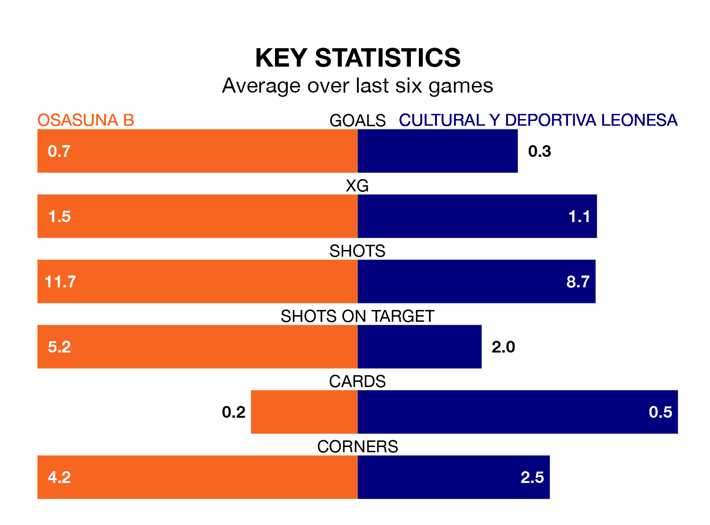

Cultural y Deportiva Leonesa travel to Instalaciones Deportivas de Tajonar looking to secure a first win in 10 Primera Division RFEF Group 1 games against Osasuna B on late Sunday.
Cultural y Deportiva Leonesa have lost two and drawn seven matches since they last earned three points – against Deportivo La Coruña on January 14.
They face an Osasuna B side who have won one and drawn four over that time.
In Miguel Bañuz Antón, Cultural y Deportiva Leonesa can rely on one of the league's safest pair of hands. He has kept 13 clean sheets in his 25 appearances this season, and no 'keeper has prevented the opposition scoring more often in Primera Division RFEF Group 1.
In Osasuna B's net, Pablo Valencia García has three clean sheets in six games. He has conceded a goal every 108 minutes, 60% more often than the 173 minutes between goals for Bañuz Antón.
With 25 goals in 28 games so far this season, the visitors are scoring at below the league average rate with 0.9 goals per game. But they are conceding fewer than average too, letting in 21 goals at a rate of 0.8 per game.
The home side, meanwhile, are above average scorers, with 1.2 goals per game, compared to a league average of 1.0. They have conceded 1.3 goals per game.
Cultural y Deportiva Leonesa are sixth in the table after 28 games, of which they have won 11 and drawn 11, earning 44 points.
Osasuna B are seven places behind Cultural y Deportiva Leonesa in 13th, with eight wins and nine draws putting them on 33 points.
Osasuna B's last match was on March 16, a 2-1 win against Unionistas de Salamanca CF, with Ander Yoldi Aizagar and Xabier Huarte Armendariz getting the goals for Osasuna B.
Cultural y Deportiva Leonesa drew 0-0 with Celta de Vigo B last time out, on March 17.
Updated: 10:19 (UTC), 22/03/24